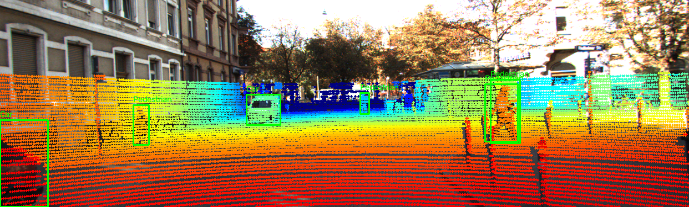
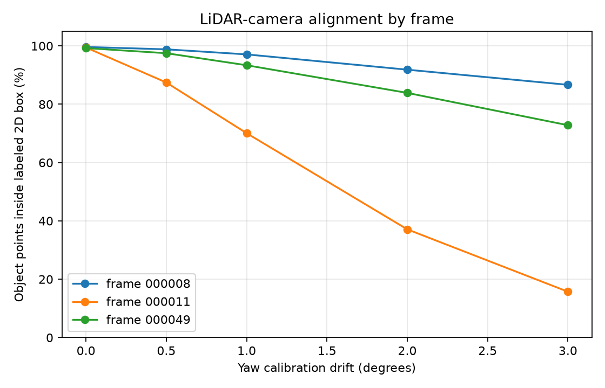
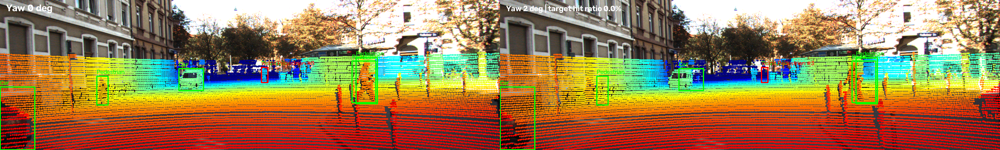
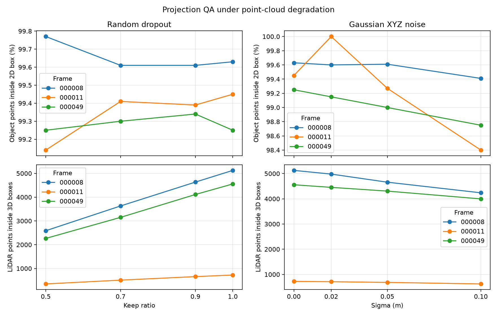
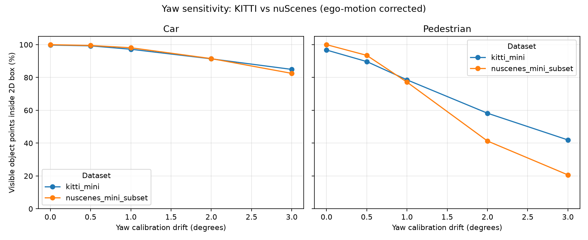

LiDAR × Camera · Calibration QA
Một độ yaw làm lệch phép chiếu bao nhiêu?
Trên KITTI, cùng một sai lệch calibration ảnh hưởng rất khác nhau tùy cảnh: frame nhiều pedestrian mất hơn 22 điểm phần trăm ở yaw 1°, trong khi frame đông xe giảm chưa đến 1 điểm.

01 · Quy trình
Giữ nguyên dữ liệu, thay đổi yaw
Thí nghiệm dùng cùng point cloud, ảnh, nhãn và pipeline chiếu. Chỉ extrinsic yaw thay đổi; chạy trên ba frame KITTI có mật độ và lớp vật thể khác nhau.
Đọc & chiếu
Đọc LiDAR, calibration và 2D labels; kiểm tra overlay ở yaw 0°.
Gây lệch
Thử yaw 0°, 1° và 2° trên cùng các frame.
Đếm điểm
Đo điểm từ 3D box nằm trong ảnh và 2D box.
Phân tích
So sánh theo frame, class, khoảng cách và dataset.
visible_hit_ratio chia số điểm trúng 2D box cho số điểm vật thể còn nhìn thấy trong ảnh. Biểu đồ CP3 mặc định dùng hit_ratio với mẫu số cố định theo calibration gốc.Các frame CP3: 000008 (đông xe), 000011 (nhiều pedestrian), 000049 (nhiều vật thể bị che).
02 · CP3 · Kết quả chính
Độ nhạy phụ thuộc vào cảnh
Frame 000011 giảm mạnh ngay ở yaw 1°; frame 000008 gần như giữ nguyên. Sai lệch nhỏ không tạo ra một mức ảnh hưởng đồng đều.

visible_hit_ratio
| Frame | 0° | 1° | 2° |
|---|---|---|---|
| 000008 · xe | 99.63% | 98.75% | 94.88% |
| 000011 · người | 99.45% | 77.44% | 45.44% |
| 000049 · che khuất | 99.25% | 93.54% | 84.73% |
Input mỗi frame: 122,555 / 108,004 / 113,691 điểm. Biểu đồ dùng hit_ratio với mẫu số cố định; bảng dùng visible_hit_ratio nên loại điểm bị đẩy ra ngoài ảnh khỏi mẫu số.
Mở CSV CP3 ↗ Breakdown class/khoảng cách ↗03 · CP4 · Failure case
Pedestrian biến mất khỏi vùng chiếu
Ở frame 000011 với extrinsic yaw lệch 2°, pedestrian được chọn không còn điểm nào nằm trong 2D box. Trong khi đó point cloud và ảnh đầu vào vẫn giữ nguyên.
Chẩn đoán: điểm của vật thể hẹp bị dịch khỏi label 2D. Tỷ lệ gộp toàn frame ở yaw 2° vẫn là 45.44%, vì metric tổng hợp nhiều vật thể.

Failure image: fail_01_yaw2_frame000011.png
04 · Bonus B2 + B3
Đo độ bền dữ liệu và chi phí chạy

Latency pipeline QA
| Frame | p50 | p95 |
|---|---|---|
| 000008 | 47.74 ms | 52.07 ms |
| 000011 | 42.01 ms | 44.62 ms |
| 000049 | 86.55 ms | 94.39 ms |
Dropout 50% gần như giữ hit ratio nhưng làm mật độ điểm giảm một nửa; nên theo dõi cả độ phủ lẫn số điểm.
CSV degradation ↗ CSV latency ↗05 · Bonus B5 + B4
Cùng phép thử, hai dataset thật
Ở yaw 2°, pedestrian nuScenes còn 41.30% so với 58.24% trên KITTI trong các frame đã chọn.

visible_hit_ratio · yaw 2°
| Dataset / class | Điểm ở 0° | Tỷ lệ |
|---|---|---|
| KITTI · Car | 9,001 | 91.36% |
| KITTI · Ped. | 1,068 | 58.24% |
| nuScenes · Car | 610 | 91.50% |
| nuScenes · Ped. | 92 | 41.30% |
Sweep có tham số, mặc định chạy được và có trợ giúp CLI.
python -m src.exp_yaw_sweep --help python -m src.exp_yaw_sweep
06 · Khuyến nghị thực tế
QA theo sự kiện, ghi log theo class
Với xe giao hàng tự hành trong đô thị, tính chỉ số khi xe dừng hoặc chạy chậm để giảm tải và hạn chế ảnh hưởng chuyển động. Dùng ngưỡng ban đầu cho pedestrian, sau đó hiệu chỉnh theo che khuất và điều kiện ngày/đêm.
Ngưỡng cảnh báo thử nghiệm. Ghi log hit ratio theo class, khoảng cách, yaw ước lượng và nhiệt độ giá đỡ cảm biến.
Mở demo · chạy lại kết quả
PowerShell · từ gốc repo
python -m src.test_projection python -m starter.projection --data-root data/kitti_mini --frame 000011 python -m src.exp_yaw_sweep --data-root data/kitti_mini --frames 000008 000011 000049 python -m src.plot_yaw_sweep python -m src.failure_yaw_demo --data-root data/kitti_mini --frame 000011 --yaw-deg 2
Các lệnh bonus B2, B3, B4, B5 và đường dẫn CSV đầy đủ nằm ở mục 5 của REPORT.md.
Mở lời thoại gợi ý cho demo 3 phút
0:00–0:20: Tôi kiểm tra độ nhạy của phép chiếu LiDAR-camera với sai lệch yaw. Claim chính là frame nhiều pedestrian nhạy hơn frame đông xe.
0:20–1:20: Giữ nguyên point cloud, ảnh và label; chỉ thay yaw. Ở frame 000011, visible_hit_ratio giảm từ 99.45% xuống 77.44% tại 1°; frame 000008 chỉ giảm 0.88 điểm phần trăm.
1:20–2:20: Failure ở yaw 2° làm pedestrian được chọn còn 0% điểm trong 2D box. Đây là lỗi Geometry do extrinsic bị lệch, không phải thay đổi dữ liệu.
2:20–3:00: Khi triển khai, chạy QA lúc xe dừng hoặc chậm; cảnh báo nếu pedestrian dưới 90% liên tục 5 phút và lưu thêm class, khoảng cách, yaw cùng nhiệt độ giá đỡ.